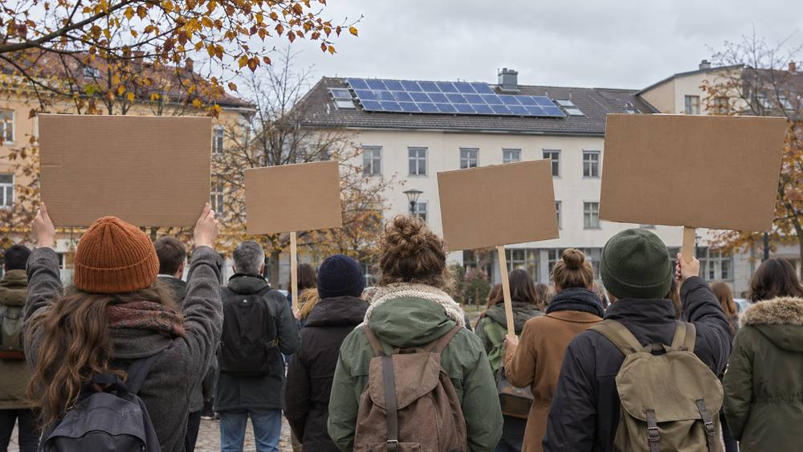

진보당, 세계태양광총회 앞두고 원전 재가동 중단 요구…기후변화대응지수 한국 61위

지수는 64개국과 유럽연합 평가, 한국은 지난해보다 두 계단 올라…총회는 11월 15일부터 20일까지 대전서 열려
진보당이 11월 13일 서면브리핑에서 원전 재가동을 포함한 정책을 즉시 멈추라고 요구했다. 홍성규 대변인은 11월 15일 대전에서 개막하는 세계태양광총회를 언급하며, 총회 유치에 그치지 말고 기후위기 대응을 되돌아봐야 한다고 밝혔다. 진보당은 이 총회를 미국·유럽·아시아의 3대 태양광 학술대회를 합쳐 4년마다 여는 최대 규모 행사로 소개했다.
홍 대변인이 근거로 든 기후변화대응지수(CCPI, 나라별 기후 완화 성과를 견주는 국제 평가)는 저먼워치가 11월 11일 튀르키예 안탈리아의 제31차 유엔기후변화협약 당사국총회(COP31)에서 공개한 2027년판이다. 이 지수는 온실가스 배출·재생에너지·에너지 사용·기후정책 네 부문, 14개 지표로 64개국과 유럽연합을 평가한다. 한국은 61위로 지난해보다 두 계단 올랐고, 기후정책 부문은 '중간', 나머지 세 부문은 '매우 낮음' 평가를 받았다. 총회는 11월 20일까지 대전에서 이어진다.
뉴스 바로 읽기
본지가 공개 자료와 본지 보도로 확인한 사실만 덧붙입니다
한국 평가 원문은 ccpi.org의 국가별 페이지에서 직접 볼 수 있다. 본지는 11월 10일 대전시가 총회 특별세션으로 11월 17일 여는 재생에너지 정책 포럼을 보도했고, 이 기사에는 에너지자립마을과 산업단지 지붕 태양광 사례 발표 계획이 담겼다. 11월 15일에는 시민 1,500명이 참여한 에너지 걷기를 전했다.
출처: 한국사회복지저널 2026-11-13 정세연 원문 보기
출처: 국제 광발전 과학공학회의(PVSEC) 누리집 2026-11-18 확인 WCPEC-9(PVSEC-37) 일정과 장소 원문 보기
출처: 저먼워치 CCPI 2026-11-11 기후변화대응지수 2027 한국 국가 페이지 원문 보기
進歩党、世界太陽光会議を前に原発再稼働の中止を要求…気候変動対策指数で韓国は61位
指数は64カ国と欧州連合を評価、韓国は前年より2段階上昇…会議は11月15日から20日まで大田で開催
進歩党は11月13日の書面ブリーフィングで、原発再稼働を含む政策を直ちに止めるよう求めた。洪性奎（ホン・ソンギュ）報道官は、11月15日に大田で開幕する世界太陽光会議に触れ、会議の誘致にとどまらず気候危機への対応を振り返るべきだと述べた。進歩党はこの会議を、米国・欧州・アジアの3大太陽光学術会議を合わせて4年ごとに開く最大規模の行事と紹介した。
洪報道官が根拠に挙げた気候変動対策指数（CCPI、国ごとの気候緩和の成果を比べる国際評価）は、ジャーマンウォッチが11月11日にトルコ・アンタルヤでの国連気候変動枠組み条約第31回締約国会議（COP31）で公表した2027年版である。この指数は温室効果ガス排出・再生可能エネルギー・エネルギー使用・気候政策の4部門、14指標で、64カ国と欧州連合を評価する。韓国は61位で前年より2段階上がり、気候政策部門は「中程度」、残る3部門は「非常に低い」との評価だった。会議は11月20日まで大田で続く。
ニュースの読み方 韓国の評価の原文は、ccpi.orgの国別ページで直接確認できる。本紙は11月10日、大田市が会議の特別セッションとして11月17日に開く[再生可能エネルギー政策フォーラム](771)を報じており、この記事にはエネルギー自立村と産業団地の屋根太陽光の事例発表計画が含まれている。11月15日には市民1,500人が参加した[エネルギーウォーク](975)を伝えた。
出典: 한국사회복지저널 2026-11-13 정세연 原文を読む
出典: 국제 광발전 과학공학회의(PVSEC) 누리집 2026-11-18 확인 WCPEC-9(PVSEC-37) 일정과 장소 原文を読む
出典: 저먼워치 CCPI 2026-11-11 기후변화대응지수 2027 한국 국가 페이지 原文を読む
进步党在世界光伏大会前要求停止重启核电…气候变化绩效指数韩国排第61
该指数评估64个国家和欧盟，韩国较上年上升两位…大会11月15日至20日在大田举行
韩国进步党11月13日在书面简报中要求立即停止包括重启核电在内的政策。发言人洪性奎提到11月15日在大田开幕的世界光伏大会，表示不应止于申办大会，而应反思对气候危机的应对。进步党介绍称，这场大会由美国、欧洲、亚洲三大光伏学术会议合办，每4年举行一次，是规模最大的同类活动。
洪性奎作为依据提到的气候变化绩效指数（CCPI，比较各国气候减缓成绩的国际评估）是德国观察（Germanwatch）11月11日在土耳其安塔利亚举行的《联合国气候变化框架公约》第31次缔约方大会（COP31）上公布的2027年版。该指数按温室气体排放、可再生能源、能源使用、气候政策四个类别、14项指标，评估64个国家和欧盟。韩国排第61，较上年上升两位，气候政策类别为"中等"，其余三个类别为"非常低"。大会将在大田持续到11月20日。
新闻速读 韩国的评估原文可在ccpi.org的国家页面直接查看。本报11月10日报道了大田市作为大会特别专场于11月17日举办的[可再生能源政策论坛](771)，该报道包含能源自立村和产业园区屋顶光伏的案例发布计划。11月15日还报道了1,500名市民参加的[能源健走](975)。
来源: 한국사회복지저널 2026-11-13 정세연 查看原文
来源: 국제 광발전 과학공학회의(PVSEC) 누리집 2026-11-18 확인 WCPEC-9(PVSEC-37) 일정과 장소 查看原文
来源: 저먼워치 CCPI 2026-11-11 기후변화대응지수 2027 한국 국가 페이지 查看原文
Progressive Party demands halt to nuclear restarts ahead of world solar conference as Korea ranks 61st in climate index
Index assesses 64 countries and the EU, Korea up two places from last year; conference runs Nov. 15-20 in Daejeon
The Progressive Party demanded in a written briefing on Nov. 13 that policies including nuclear plant restarts be halted immediately. Spokesperson Hong Seong-gyu referred to the World Conference on Photovoltaic Energy Conversion opening in Daejeon on Nov. 15 and said the country should reflect on its climate response rather than stop at hosting the event. The party described the conference as the largest of its kind, combining the three major solar research conferences of the US, Europe and Asia once every four years.
The Climate Change Performance Index (CCPI, an international comparison of countries' climate mitigation results) that Hong cited is the 2027 edition, which Germanwatch presented on Nov. 11 at the 31st UN climate conference (COP31) in Antalya, Türkiye. The index assesses 64 countries and the European Union across four categories (emissions, renewable energy, energy use and climate policy) and 14 indicators. Korea ranked 61st, up two places from last year, with a "medium" rating for climate policy and "very low" in the other three categories. The conference continues in Daejeon through Nov. 20.
News in context The original Korea assessment can be read on the country page at ccpi.org. On Nov. 10, this paper reported on the [renewable energy policy forum](771) that Daejeon City holds on Nov. 17 as a special session of the conference, which includes plans to present energy self-reliant village and industrial-park rooftop solar cases. On Nov. 15, it covered the [energy walk](975) with 1,500 citizens.
Source: 한국사회복지저널 2026-11-13 정세연 Read the original
Source: 국제 광발전 과학공학회의(PVSEC) 누리집 2026-11-18 확인 WCPEC-9(PVSEC-37) 일정과 장소 Read the original
Source: 저먼워치 CCPI 2026-11-11 기후변화대응지수 2027 한국 국가 페이지 Read the original